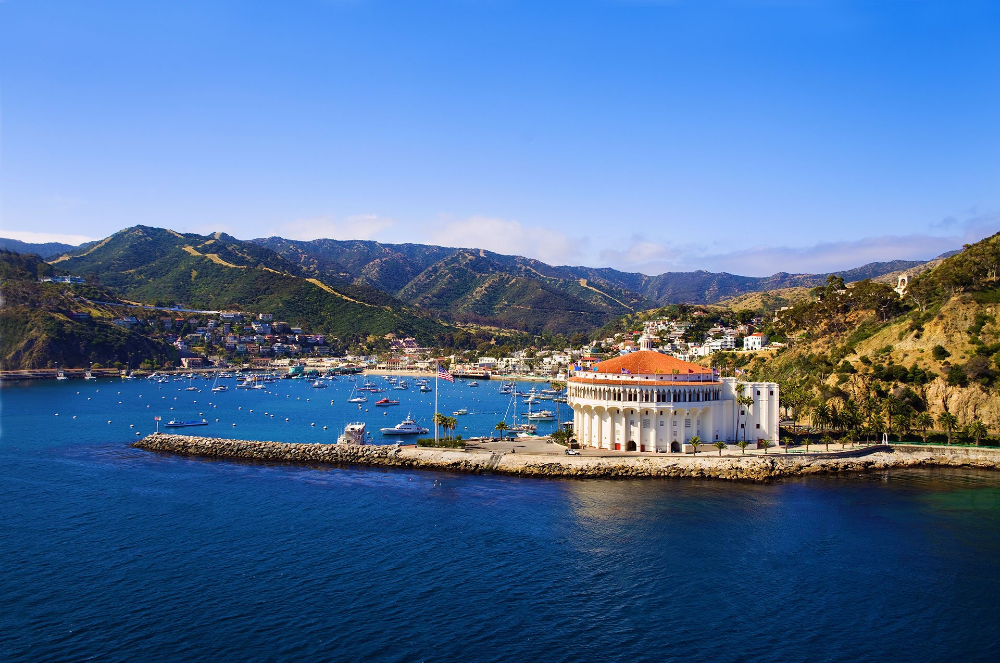
Sailing out of Long Beach Harbor, we'll make the 24 nautical mile passage to Avalon Harbor for the annual Catalina Wine Mixer! We'll be sleeping abord our Catamaran for 2 nights at Avalon Harbor, partaking in the shore shenanigans. There will be a welcome party, wine tasting, time at a beach club, and plenty of local restaurants and shops to explore. For the divers (or snorkelers) among us, Casino Point is a great place to get into the water and see some indigenous Garibaldis, so be sure to bring your wetsuits.
Dates: 5/30/25 - 6/1/25
Additional Costs: We split grocery/drink expenses; damages to our boat/other boats that aren't covered by insurance; docking fees; gas
Departure/Return port: Long Beach Marina
Estimated meet up time 5/30 at 9 a.m.
Estimated disembarkation time 6/1 at 6 p.m.
Marina Sailing Office at the Long Beach Marina: Google Maps
The yacht should be near the office. Can meet up in the parking lot.
Tickets for Catalina Wine Mixer: Eventbrite
Please be sure to buy your general admission tickets. They are good for Friday and Saturday Events.
Friday 5/30
Saturday 5/31
Scuba Diving/Snorkeling
We will have time for diving and snorkeling Saturday morning and/or Sunday. We don't have to leave Catalina until around 2p.m. Sunday, so we have some time. There is a dive shop right at Casino Point. You can rent your air, weights, and any additional gear you need there. For air and weights, you can usually get those day of. For gear rental, it's recommended to book in advance: Diving Catalina
We Chartered 2 catamarans for this adventure.
Do Nothin'
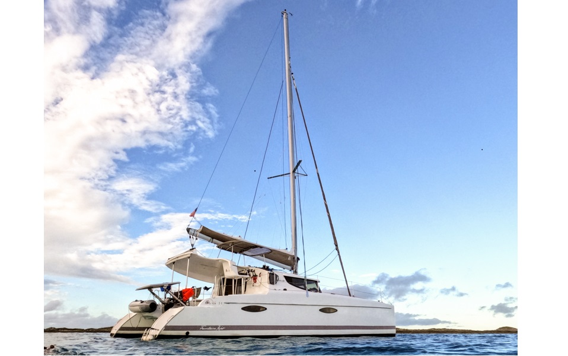
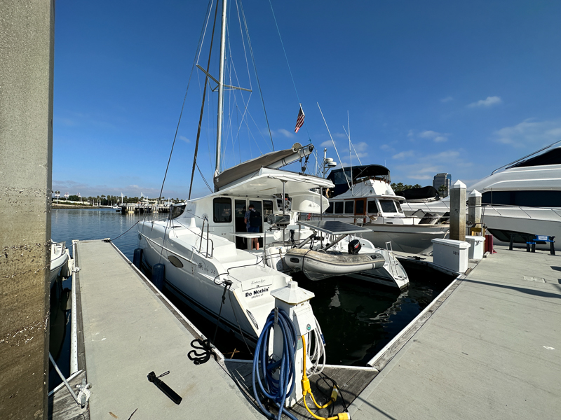
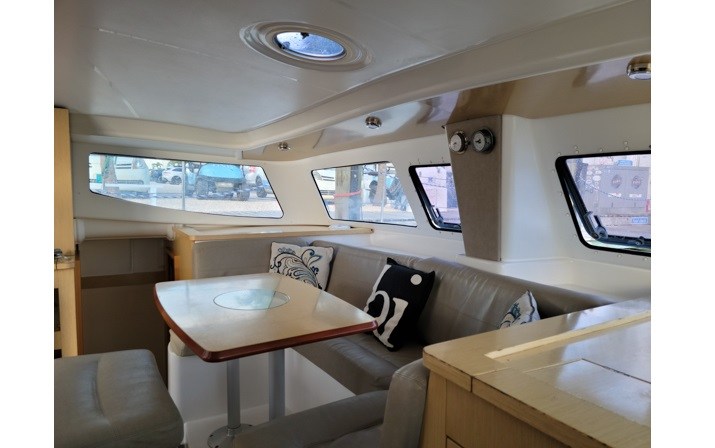
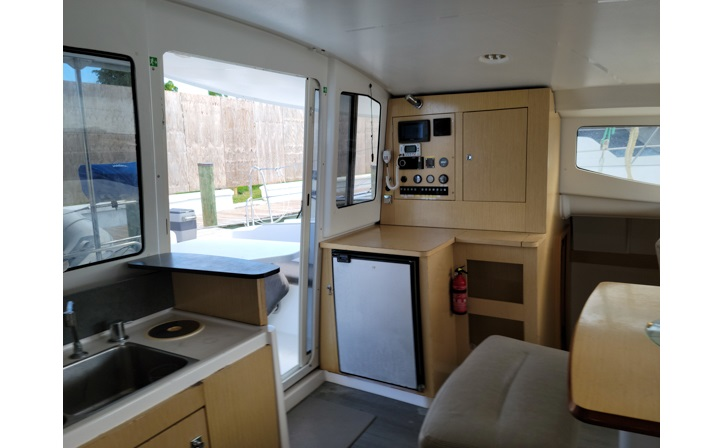
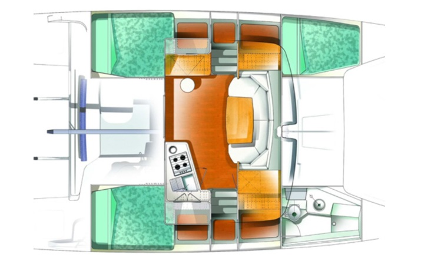
Even Tide
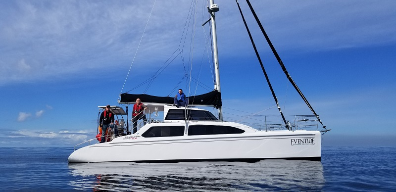
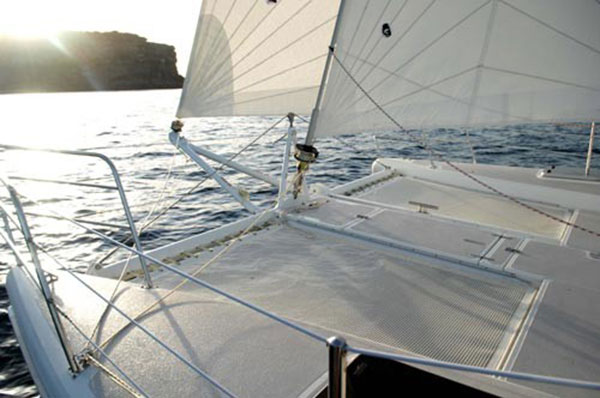
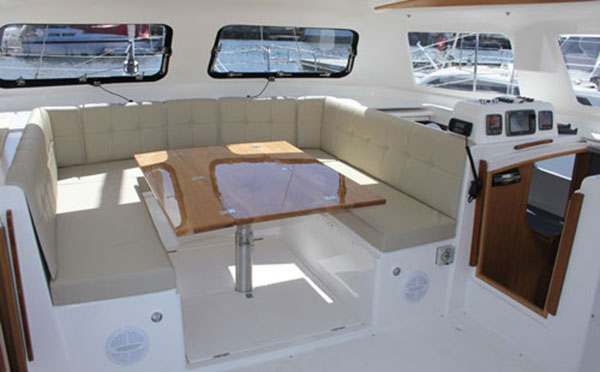
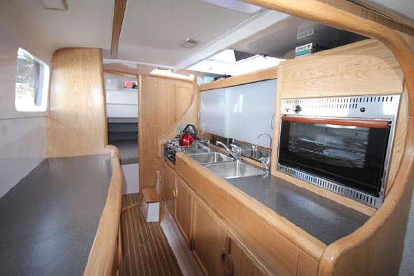
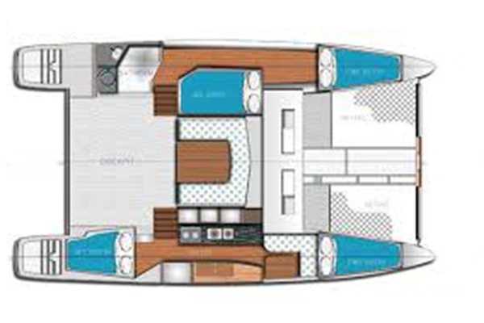
We'll be out at sea, so it's a good time to practice minimalism. Not too much storage on the yachts. Here is a list of essentials to get you started:
We will do our grocery shopping the day before the trip for optimal freshness. All costs are split by the people on the yacht. Since we have 2 yachts this time, we'll split the grocery bills up per boat. We'll be anchored in Avalon for the entirety of the trip, so we might not need to cook much on the ship. We will also be going to a wine tasting Saturday, so plan the drinks accordingly as well. Please fill out your food/drink preferences on this sheet HERE. Please be sure to fill it out for the boat that you're in.
The trip will be a blast and we aren't expecting to have any major issues arise. Those of you who have already joined us on one of our sailing adventures know what to expect. Those of you who are new, please take the time to go over the links below: